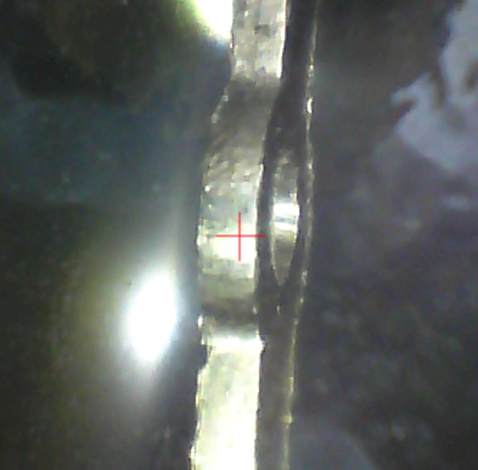
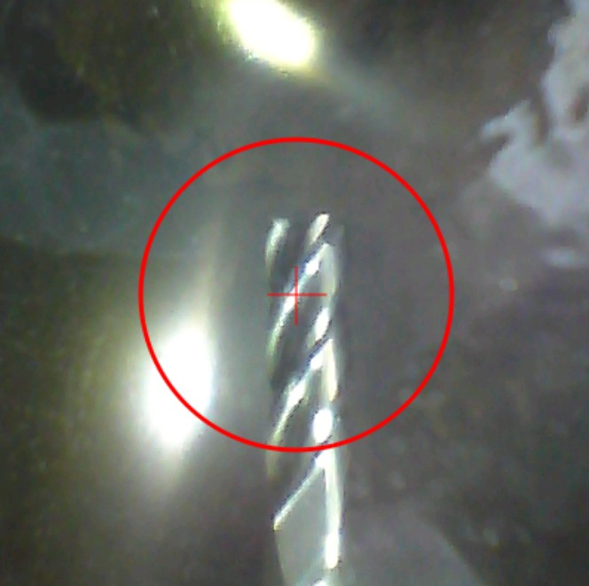

← Back to projects
Micro-Milling Research · Bachelor Thesis
Feed-Rate Effects on CP Titanium Micro-Milling Quality
Experimental evaluation of dimensional accuracy, burr formation, and machining-induced surface compositional change in CP Titanium I-Plate micro-milling.
Research overviewExperimental study
Engineering Questions
Why does feed rate matter at the microscale?
- Background
- Micro-milling of CP Titanium is influenced by size effects, ductility, and material adhesion. At low chip loads, rubbing and ploughing can become more significant, affecting not only dimensional accuracy and burr formation but also the condition and elemental composition of the machined surface.
- Aim
- The study investigated feed rates from 10 to 90 mm/min while keeping spindle speed, depth of cut, cutting tool, and dry-cutting conditions constant. Machining quality was evaluated through dimensional accuracy, burr height, and surface compositional change, with used cutting tools examined as supporting evidence of material transfer.
- Result
- Increasing feed rate generally improved geometric quality. Mean dimensional accuracy increased from 98.0% to 99.1%, while mean burr height decreased from 69.9 µm to 40.3 µm. Compositional changes were greatest at the two lowest feed rates: the largest Ti deviation occurred at 20 mm/min, while the smallest occurred at 50 mm/min. Overall, the 30–90 mm/min range produced a more favorable balance than 10–20 mm/min.

Research Workflow
From implant geometry to experimental validation
Experimental Setup
Controlled micro-milling of a 0.6 mm CP Titanium plate

Measurement & Analysis
Quantifying machining quality
- Inner circular profile
- Outer circular profile
- Straight profile
- 50× optical measurement
- Straight-profile burr
- Outer-profile burr
- Mean burr height
- 120× optical measurement
- Raw-material elemental baseline
- Machined-specimen composition
- Feed-rate-dependent compositional change
- ΔTi used as a compositional-change indicator
- Elemental composition at cutting region
- Comparison of unused / used tool evidence
- Ti enrichment used as supporting evidence of adhesion / transfer
Dimensional observation used 50× optical magnification, while burr-height measurement used 120× magnification with Dino-Lite microscopy and DinoCapture/ImageJ processing.
Feed per tooth: fz = Vf / (n × z). Vf is feed rate, n is spindle speed, and z is flute count.
The Ti-reduction equation uses initial − specimen. The chart uses signed specimen − initial changes for every element, including Ti. X̄ denotes mean elemental composition in wt.%; differences are percentage points (pp). A reduction in Ti wt.% is a relative compositional-change indicator, not direct physical loss of that mass fraction of titanium.
Contamination is used here as an operational term for measurable changes in elemental composition after machining; it does not represent a biological or toxicological assessment.




Results
Feed-rate effects across three quality responses
99.1%Best Mean Dimensional Accuracy42.3%Reduction in Mean Burr Height90 mm/minBest Geometric & Edge Quality50 mm/minSmallest Ti Deviation
Dimensional Accuracy
98.0% → 99.1%Mean dimensional accuracy increased from 98.0% at 10 mm/min to 99.1% at 90 mm/min. The straight profile consistently showed the highest accuracy, whereas the inner profile showed the lowest.
Panel (a) compares inner, outer, and straight profiles; panel (b) shows the reported mean. Lines connect measured values.
Burr Height
69.9 → 40.3 µm−42.3% Mean Burr Height
Mean burr height decreased from 69.9 µm at 10 mm/min to 40.3 µm at 90 mm/min. The outer profile consistently produced greater burr height than the straight profile.
Grouped bars show the two measured profiles, while the second panel presents the reported mean. The local increase at 70 mm/min is retained.
Surface Compositional Change
20 mm/min: −3.58 ppLargest Ti deviation at 20 mm/min; smallest Ti deviation at 50 mm/min (−0.72 pp). Low feed rates showed the strongest Fe enrichment.
All machined specimens showed a lower relative Ti fraction than the raw-material baseline. Fe enrichment was strongest at 10–20 mm/min. Al was detected on all machined specimens despite being absent from the raw-material baseline.
Contamination indicators are expressed as signed elemental changes in percentage points (pp). ΔTi indicates relative compositional change, not direct Ti mass loss.
Evidence of Material Transfer
Endmill-1: Ti 30.82 wt.% · Endmill-2: Ti 39.41 wt.%
The higher Ti fraction measured in the used cutting region is consistent with adhesion of CP Titanium workpiece material to the tool. Together with Al detected on machined specimens, the measurements provide supporting evidence of material transfer across the tool–workpiece interface.
Endmill-1 is the unused-tool reference; Endmill-2 is the used tool. This comparison is supporting evidence, not a feed-rate trend or a direct measure of tool wear.
Performance Balance
90 mm/minHighest dimensional accuracy and lowest burr height50 mm/minSmallest compositional deviation30–90 mm/minMore favorable overall response than 10–20 mm/min
No single feed rate produced the best value for every criterion. Feed-rate selection should therefore consider geometric accuracy, burr formation, and machining-induced compositional change simultaneously.
Engineering Takeaway
Feed rate affected geometry, edge quality, and surface composition
Across 10–90 mm/min, increasing feed rate generally improved dimensional accuracy and reduced burr height. The compositional response was different: the largest deviation from the raw-material baseline occurred at the two lowest feed rates, while the smallest Ti deviation occurred at 50 mm/min.
A feed rate of 90 mm/min provided the highest dimensional accuracy and lowest burr height, while 50 mm/min produced the smallest compositional deviation. Feed rates from 30 to 90 mm/min therefore provided a more favorable overall response than 10–20 mm/min, without implying a single universal optimum.